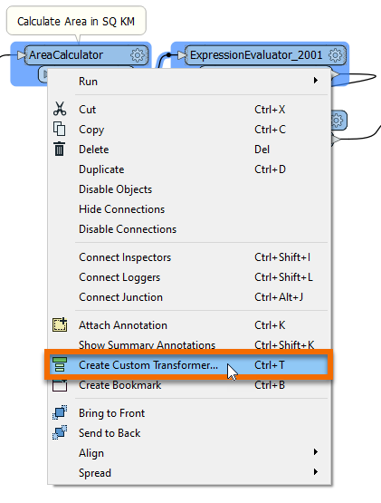
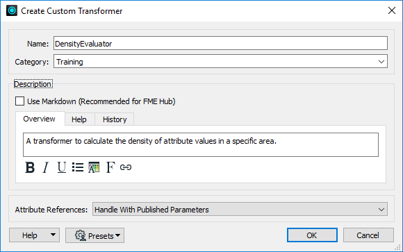
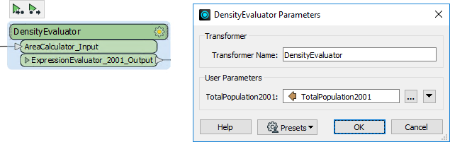

After completing this lesson, you’ll be able to:
A colleague - new to FME - has created a workspace that calculates the population density for neighborhoods in the city of Vancouver. They comment that your organization could reuse this technique for other projects.
You mention custom transformers as a way of doing this. You will now demonstrate how to turn this workspace into a general solution that calculates the average density of items in a given space.
Start by opening your colleague's workspace in FME Workbench (2023.2 or later).
You can run the workspace and examine the output to see what it does and how it works. It calculates the population density (persons per square kilometer) for the years 2001 and 2011:
You might get an Unexpected Input warning dialog when you run the workspace now or later in the exercise. That's OK; you can safely ignore it. It simply reports that the source dataset contained feature types that were read by the workspace but discarded because they were not defined on the Canvas.
The critical components for the custom transformer are the AreaCalculator and ExpressionEvaluator transformers. If you examine the workspace, you’ll see two ExpressionEvaluators (one for 2001 and one for 2011), but we don’t need to include both in the custom transformer.
So select the AreaCalculator transformer and ExpressionEvaluator_2001 (the first ExpressionEvaluator), right-click on them, and choose the context menu option Create Custom Transformer (or press Ctrl+T).

Enter a Name, Category, and Description for the new custom transformer in the Create Custom Transformer dialog. A good name for the transformer will be the DensityEvaluator.
You can’t call it the DensityCalculator; FME already has one of those!
Set Attribute References to “Handle with Published Parameters” (more on that in a later lesson) and click OK:

The custom transformer appears in a new tab.
Flip back and forth between the DensityEvaluator tab and the Main tab to see how the custom transformer appears and its place in the workspace itself:

Back in the Main tab, inspect the parameters for the custom transformer.
FME automatically creates the main parameter to accept the attribute to be processed. It automatically has a value of the TotalPopulation2001 attribute:

Save and then run the workspace to ensure the output has not changed. However, note that this is just the start of building this custom transformer. We need to make it more generic before reusing it in other scenarios. We’ll do that in upcoming lessons.